Cinemática diferencial#
En los capítulos anteriores, hemos explorado la cinemática de la posición de manipuladores seriales. Esto implica fundamentalmente relacionar las posiciones de las articulaciones con la posición y orientación del extremo del manipulador. En este capítulo, nos adentraremos en el cálculo de las relaciones entre las velocidades lineales y angulares del extremo del manipulador y las velocidades de las articulaciones.
Comenzaremos por calcular las velocidades lineales y angulares por separado en un manipulador serial. Luego, introduciremos el concepto de matriz jacobiana, que nos permitirá describir de manera unificada la relación entre las velocidades de las articulaciones y las velocidades lineales y angulares del extremo del manipulador.
\( \newcommand{\W}{\boldsymbol{\omega}} \newcommand{\w}[1]{\omega_{#1}} \newcommand{\rbr}[1]{ \left( #1 \right) } \newcommand{\sbr}[1]{ \left[ #1 \right] } \newcommand{\cbr}[1]{ \left\{ #1 \right\} } \newcommand{\abr}[1]{ \langle #1 \rangle } \newcommand{\colvec}[3]{\begin{bmatrix}#1\\#2\\#3\end{bmatrix}} \newcommand{\rowvec}[3]{\begin{bmatrix}#1\end{bmatrix}} \newcommand{\colvech}[4]{\begin{bmatrix}#1\\#2\\#3 \\ #4\end{bmatrix}} \DeclareMathOperator{\sen}{sen} \renewcommand{\vec}[1]{\mathbf{#1}} \newcommand{\qp}[1]{\dot{q}_{#1}} \newcommand{\qpp}[1]{\ddot{q}_{#1}} \)
Derivada de una matriz de rotación#
Suponga que se tiene una matriz de rotación \(R\) que depende del tiempo \(t\), es decir \(R=R(t)\); dado que \(R\) es ortogonal se cumple que:
Derivando ambos lados de la ecuación con respecto a \(t\) se tiene que:
Ahora, si definimos a una matriz \(S\) como sigue:
Se puede verificar que:
Entonces, de la ecuación (34) se puede verificar que:
Lo cual implica que la matriz \(S\) definida previamente es una matriz antisimétrica. Si postmultplicamos ambos lados de la ecuación (35) por \(R\), se tiene que:
Esta ecuación nos dice que la derivada de una matriz de rotación es equivalente a la multiplicación matricial de una matriz antisimétrica \(S\) por la matriz de rotación \(R\).
La matriz antisimétrica \(S\) puede interpretarse como una representación matricial de la velocidad angular \(\W\), es decir, \(S\) es la matriz antisimétrica asociada con el vector de velocidad angular:
Ejemplo. Calcula \(S(\W)\) asociada con \(R_{x,\theta}\). Considera que \(\theta = \theta(t)\).
Solución
La matriz \(R_{x,\theta}\) está dada por:
Derivando con respecto al tiempo se tiene que:
Entonces:
Es sencillo observar que el vector \(\W\) asociado con \(S\) es:
Lo cual es lo esperable: la velocidad angular únicamente tiene componente en la dirección de rotación \(x\).
Velocidades angulares en un manipulador serial#
La velocidad angular es una propiedad de cuerpo rígido que indica qué tan rápido está cambiando de orientación un cuerpo rígido, y en qué dirección lo hace. En cursos elementales de mecánica del cuerpo rígido aprendemos que la velocidad angular para un sólido rígido que rota en el plano es un vector cuya magnitud es la derivada con respecto al tiempo de la posición angular, es decir:
Y la dirección de este vector es normal al plano del movimiento. Naturalmente, esto no escalaría de forma adecuada para determinar velocidades angulares en manipuladores seriales, puesto que la orientación no depende de un sólo parámetro. Debido a esto haremos uso de lo que revisamos en la sección previa, abordaremos el análisis de las velocidades angulares mediante la derivación con respecto al tiempo de las matrices de rotación que representan la orientación del cuerpo rígido.
Supongamos que se tiene una matriz \(R_1^0\) que describe la orientación del sistema de referencia \(\{1\}\) que rota con respecto al sistema fijo \(\{0\}\), y que en el caso general \(R_1^0\) es dependiente del tiempo, es decir \(R_1^0=R_1^0(t)\). Entonces, la derivada con respecto al tiempo de \(R_1^0\) se puede escribir como:
Donde \(S(\W_1)\) es una matriz antisimétrica. El vector \(\W_1 = \W_1(t)\) es la velocidad angular del sistema \(\{1\}\) con respecto al \(\{0\}\).
Derivada de una matriz \(R_j^i\)
La ecuación (36) se puede generalizar para cualesquiera sistemas \(\{i\}\) y \(\{j\}\) que difieran por rotaciones dependientes del tiempo, sin que necesariamente uno de ellos sea un sistema fijo, es decir:
Usaremos la notación \(\W_{i,j}^i\) para denominar al vector de velocidad angular del sistema de referencia \(\{j\}\) con respecto al sistema \(\{i\}\) descrito en el sistema de referencia \(\{i\}\). Por comodidad y simplicidad para escribir las expresiones, prescindiremos del superíndice cuando el sistema de referencia con respecto al cual se describe el movimiento angular sea el de la base, es decir, usualmente en lugar de escribir \(\W_{0,n}^0\), escribiremos \(\W_{0,n}\) o en su versión más simple \(\W_n\).
Bien, ahora continuando con nuestros sistemas de referencia \(\{1\}\) y \(\{0\}\), supongamos que se agrega un tercer sistema de referencia \(\{2\}\), cuya orientación también es dependiente del tiempo. La descripción de la orientación de \(\{2\}\) con respecto a \(\{1\}\) está dada por \(R_2^1 = R_2^1(t)\). Si quisiéramos determinar la orientación de \(\{2\}\) en \(\{0\}\) podríamos hacerlo mediante:
Si derivamos esta expresión con respecto al tiempo se tiene:
El lado de izquierdo de esta ecuación se puede escribir como:
Para el primer término del lado derecho:
Para el segundo término del lado derecho:
Si múltiplicamos lo anterior por \((R_1^0)^T R_1^0\) (este producto es igual a \(I\), es decir, no alteramos la expresión), se tiene:
Observe que \( R_1^0 S( \W_{1,2}^1 ) \rbr{R_1^0}^T \) es una transformación de similitud de \(S( \W_{1,2}^1 )\), entonces de acuerdo con la ecuación (83):
Así pues, el segundo término de la ecuación (38) se puede escribir como:
De tal modo que podemos rescribir la ecuación (38) como:
O bien:
Lo anterior implica que:
Por propiedades de las matrices antisimétricas sabemos que \( S(\vec{a}) + S(\vec{b}) = S(\vec{a} + \vec{b}) \), entonces:
Si efectuamos la transformación de coordenadas de \( \W_{1,2}^1 \):
O básicamente, la velocidad angular del sistema de referencia \(\{2\}\) con respecto al sistema \(\{0\}\) se puede determinar sumando las velocidades angulares de \(\{1\}\) con respecto \(\{0\}\) y de \(\{2\}\) con respecto \(\{1\}\), siempre y cuando estén expresadas en el mismo sistema de referencia.
El procedimiento anterior se puede extender y generalizar para cualquier cantidad de sistemas de referencia. Suponga que tenemos los sistemas de referencia \(0\), \(1\), \(2\), \(\cdots\), \(i\), podemos escribir entonces que:
Derivando \(R_i^0\):
En donde:
O bien:
Por simplicidad, y dado que todos los vectores están descritos en el sistema de la base, en esta ecuación podemos prescindir de los superíndices:
Así, para nuestros propósitos, podemos interpretar lo anterior como sigue: en un manipulador serial, la velocidad angular \( \W_i \) de un eslabón \(i\), se puede calcular sumando los vectores de velocidad angular \( \W_{j-1,j}\) de los eslabones que le anteceden. Los vectores \( \W_{j-1,j} \) corresponden a la velocidad angular de cada eslabón \(j\) con respecto al eslabón inmediatamente anterior \(j-1\), descrita en el sistema \(\{0\}\).
Si consideramos que la descripción de la cinemática directa del manipulador se hace utilizando la metodología de Denavit-Hartenberg, entonces los vectores de velocidad angular de la forma \( \W_{j-1,j} \) se pueden determinar de la siguiente manera:
Lo anterior implica que una junta prismática no contribuye a la velocidad angular, dado que no produce un cambio en la orientación entre los sistemas \(\{j\}\) y \(\{j-1\}\).
Ejemplo. Calcule las velocidades angulares de los eslabones 1 y 2 del manipulador RR de la Figura Fig. 64.

Fig. 64 Manipulador RR#
Solución:
La velocidad angular del eslabón 1 se puede determinar como sigue:
Dado que la junta \(1\) es una revoluta, entonces el vector \( \W_{0,1} \) nos quedará de la siguiente manera:
Para la velocidad angular del eslabón 2 se tiene que:
Dado que la segunda articulación también es una revoluta, entonces:
El vector \(\vec{z}_1\) se obtiene de la tercer columna de la matriz \( R_1^0 \) (calculada en el procedimiento de cinemática directa):
Entonces:
Por lo cual:
Velocidades lineales en un cuerpo rígido#
En la Figura rigid_body_velocities se muestra un cuerpo rígido, al cual se le adhiere un sistema de referencia \(\{1\}\) que se mueve junto este. Se tiene también un sistema de referencia fijo \(\{0\}\). El cuerpo rígido está en un movimiento general, es decir, experimenta un movimiento compuesto de rotación y traslación. En lo subsiguiente veremos cómo relacionar las velocidades lineales y angulares de este cuerpo rígido, utilizando los dos sistemas de referencia mostrados.
{kind=link}
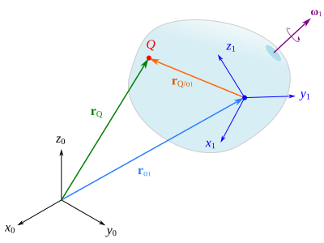
Fig. 65 Un cuerpo rígido#
En la Figura Fig. 65 puede observarse también un punto \(Q\), del cual es sencillo verificar que se cumple la siguiente ecuación vectorial de posición:
Donde \(\vec{r}_Q\) es un vector que describe la posición de \(Q\) con respecto al sistema \(\{0\}\), \(\vec{r}_{o_1}\) es un vector que define la posición del origen del sistema \(\{1\}\) y \(\vec{r}_{Q/{o_1}}\) es un vector de posición que va desde el origen del sistema \(\{1\}\) hasta el punto \(Q\).
Una relación de velocidad se puede obtener si derivamos con respecto al tiempo cada uno de los términos de la ecuación (42):
Puesto que tanto \(\vec{r}_Q\) como \(\vec{r}_{o_1}\) son vectores de posición medidos desde el origen del sistema fijo, entonces la derivada de estos vectores con respecto al tiempo corresponderá a una velocidad absoluta, es decir:
Sin embargo, la derivada de \(\vec{r}_{Q/{o_1}}\) corresponde a una velocidad relativa, puesto que es un posición de \(Q\) medida con respecto a un punto \(o_1\) que está en movimiento. Si el punto \(Q\) está fijo en el sólido rígido (o lo que es lo mismo: fijo con respecto al sistema \(\{1\}\)), entonces la velocidad de \(Q\) con respecto al punto \(o_1\), vista desde el sistema inercial, está dada únicamente por el cambio de la orientación del vector \(\vec{r}_{Q/{o_1}}\), lo cual puede determinarse mediante:
Si el punto \(Q\) se mueve con respecto al sistema \(\{1\}\), entonces a lo anterior habría que sumarle un término que represente el cambio del vector \(\vec{r}_{Q/{o_1}}\) visto desde el sistema \(\{1\}\), es decir:
Así pues, la velocidad del punto \(Q\) se puede escribir de manera general como:
Velocidades lineales en un manipulador serial#
Consideremos un manipulador serial conformado por juntas prismática y de revoluta, tal como se muestra en la figura Fig. 66. Asumiendo, además, que cada sistema de referencia está colocado de acuerdo con la metodología de Denavit-Hartenberg, entonces cada eje \(z_{i-1}\) define la dirección de rotación o deslizamiento de la junta \(i\).
{kind=link}
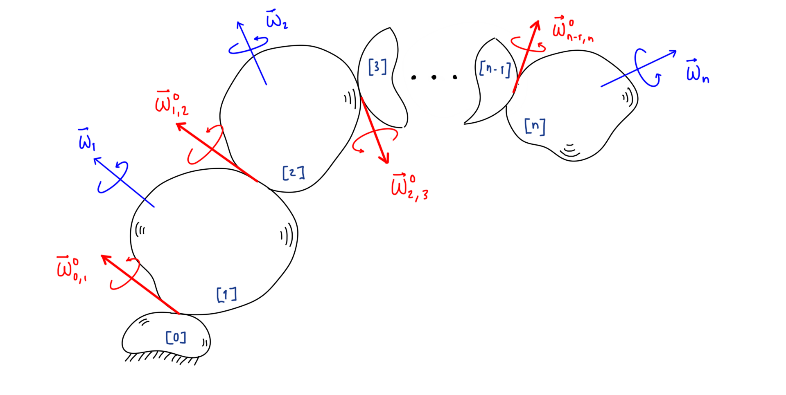
Fig. 66 Velocidades en un manipulador serial#
Las velocidades angulares \(\W_1, \W_2, \cdots, \W_n\) corresponden a las velocidades angulares de cada eslabón con respecto al sistema de referencia de la base. Las velocidades angulares \( \W_{0,1}^{0}, \W_{1,2}^0, \cdots , \W_{n-1,n}^{0} \) corresponden a las velocidades angulares de cada eslabón \(i\) con respecto al eslabón \(i-1\) que le precede. Observe que si usamos la misma notación podríamos expresar que \( \W_i = \W_{0,i}^0 \). De acuerdo con lo visto en la sección Velocidades angulares en un manipulador serial sabemos que:
Además es importante recordar que en el caso de la i-ésima junta sea prismática, entonces:
De acuerdo con lo expuesto en la sección Velocidades lineales en un cuerpo rígido podemos expresar la velocidad del origen de coordenadas del sistema \(\{i\}\) de la siguiente manera:
Donde \( \vec{v}_{o_{i-1}} \) denota la velocidad lineal del origen de coordenadas del sistema de referencia \(\{i-1\}\), \( \W_i \) es la velocidad angular del eslabón \(i\), \(\vec{r}_{o_i/o_{i-1}}\) es un vector de posición del origen de coordenadas del sistema \(\{i\}\) con respecto al origen de coordenadas del sistema \(\{i-1\}\) y el término \( \rbr{ v_{o_i/o_{i-1}} }_{i-1} \) corresponde al cambio de la magnitud del vector que describe la posición del origen del sistema \(\{i\}\) en el sistema \(\{i-1\}\).
Así pues, las velocidades lineales de cada origen de los sistemas de referencia se pueden expresar como:
De las ecuaciones anteriores es sencillo verificar que la velocidad lineal del extremo del manipulador se puede escribir como:
O en su forma equivalente como:
Si el sistema de la base es un sistema fijo (caso típico, salvo que el manipulador estuviera montado sobre un dispositivo que le agregara movimiento), entonces \(\vec{v}_{o_0} = \vec{0}\), lo cual implica que:
Cada una de las velocidades angulares \( \W_i \) se determinan utilizando la ecuación (43). Los vectores de posición \( \vec{r}_{o_i/o_{i-1}} \) se calculan como:
Donde:
En el caso particular de que la i-ésima junta sea una revoluta, el término \( \rbr{ \vec{v}_{o_i/o_{i-1}} }_{i-1} \) se hace cero, puesto que la distancia entre los orígenes de \(\{i\}\) y \(\{i-1\}\) permanece invariable.
Velocidades lineales en un manipulador serial#
En esta sección derivaremos expresiones para determinar las velocidades lineales en un manipulador serial. Comenzaremos recordando que aquí únicamente analizaremos manipuladores seriales conformados por juntas prismáticas y de revoluta.
Velocidad lineal del origen del sistema \({i}\)#
Comenzaremos determinando la velocidad del origen de coordenadas del sistema \({i}\) cuando la junta \(i\) es de tipo revoluta. En la Figura Fig. 67 puedes observar el esquema que representa este caso, observa que el eslabón \(i\) está unido al eslabón \(i-1\) mediante la junta \(i\), además, el eje \(z_{i-1}\) apunta en la dirección de accionamiento de la junta \(i\).

Fig. 67 Velocidad del origen del sistema \(i\) cuando la junta \(i\) es revoluta.#
Formularemos una expresión de velocidad para el origen del sistema \(\{i\}\) asumiendo que conocemos la velocidad del origen de coordenadas del sistema \(\{i-1\}\). Es sencillo observar que:
Ejemplo. Calcule la velocidad lineal del extremo del manipulador RR mostrado en la Figura Fig. 64.
Solución:
La velocidad lineal del extremo está dada por:
Dado que la distancia entre los orígenes de los sistemas \(\{1\}\) y \(\{0\}\) no cambia, entonces \(\rbr{ \vec{v}_{o_1/o_0} }_0 = \vec{0}\). Algo similar ocurre con los orígenes de \(\{2\}\) y \(\{1\}\), así pues \(\rbr{ \vec{v}_{o_2/o_1} }_1 = \vec{0}\). \
Las velocidades angulares \(\W_1\) y \(\W_2\) para este manipulador están dadas por:
Los vectores de posición \(\vec{r}_{o_1/o_0}\) y \(\vec{r}_{o_2/o_1}\) se pueden formar a partir de las matrices \(T_i^0\), quedando:
Entonces:
Sumando ambos términos:
Si conocemos la posición del extremo del manipulador (\( \vec{r}_{o_n} \)) en función de las variables articulares de posición (\(q_1\), \(q_2\), \(...\), \(q_n\)), es posible determinar la velocidad lineal mediante derivación con respecto al tiempo, es decir:
El vector \(\vec{r}_{o_n}\) se puede obtener de la matriz de cinemática directa \(T_n^0\); recordando que la cuarta columna de esta matriz corresponde a la posición del origen de coordenadas del sistema de referencia \(\{n\}\), el cual se coloca usualmente en el extremo del manipulador, es decir:
El vector de velocidad lineal \(\vec{v}_{o_n}\) nos quedará usualmente en términos de las velocidades articulares (\(\dot{q}_1\), \(\dot{q}_2\), \(...\), \(\dot{q}_n\)). Al efectuar la derivada con respecto al tiempo se debe considerar que las variables articulares de posición (\(q_1\), \(q_2\), \(\ldots\), \(q_n\)) son funciones que dependen del tiempo, es decir \( q_i = q_i(t) \). Naturalmente, el resto de parámetros constantes del manipulador, se deben tratar como tal al momento de realizar las derivadas correspondientes.
Ejemplo. Utilice derivadas para determinar la velocidad lineal del extremo del manipulador RR mostrado en la Figura Fig. 64.
Solución:
Recordar que la cinemática directa de este manipulador está dada por:
Entonces, el vector de posición \( \vec{r}_{o_2} \) sería:
Por lo cual, al derivar con respecto al tiempo tendríamos:
Observe que esta solución coincide con la obtenida previamente mediante los productos vectoriales.
Ejemplo. Calcule la velocidad lineal del extremo del manipulador RRP mostrado en la Figura Fig. 68, para un instante en el que:
{kind=link}
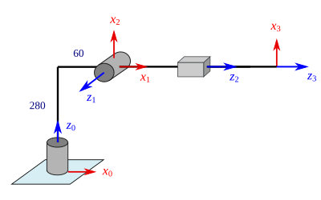
Fig. 68 .#
Solución:
La matriz de cinemática directa para este manipulador está dada por:
De lo cual:
Derivando con respecto al tiempo se tiene:
Sustituyendo los valores numéricos:
Lo visto previamente para la velocidad del extremo del manipulador, se puede generalizar para cualquier punto en el manipulador. Supongamos que se tiene un punto \(P\), ubicado en el eslabón \(i\), es sencillo ver que su velocidad lineal se puede determinar mediante:
Si el punto \(P\) está fijo en el eslabón \(i\) (caso típico), entonces su velocidad relativa \(\vec{v}_{P/{o_i}}\) se debe únicamente a la rotación del eslabón \(i\), es decir:
En el caso de que el punto \(P\) no esté fijo en el eslabón \(i\), entonces, adicionalmente debería considerarse el cambio en la magnitud del vector \(\vec{r}_{P/{o_i}}\) visto desde el sistema \(\{i\}\), es decir:
Ejemplo. Calcule la velocidad de los puntos \(A\) y \(B\), ubicados en los eslabones 1 y 2, respectivamente, del manipulador RR mostrado en la figura. Se sabe que:
{kind=link}
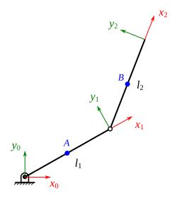
Fig. 69 Manipulador RR#
Solución:
Para calcular \(\vec{v}_A\):
\begin{align*} \vec{v}A & = \vec{v}{o_1} + \W_1 \times \vec{r}{A/{o_1}} \ & = \W_1 \times \vec{r}{o_1/o_0} + \W_1 \times \vec{r}{A/o_1} \ & = \W_1 \times \rbr{ \vec{r}{o_1/o_0} + \vec{r}{A/o_1} } \ & = \W_1 \times \vec{r}{A/o_0} \end{align*}
La velocidad angular \( \W_1 \) se determina mediante:
Y el vector de posición \(\vec{r}_{A/o_0}\):
Entonces:
Para determinar la velocidad de \(B\):
\begin{align*}
\vec{v}B & = \vec{v}{o_2} + \W_2 \times \vec{r}{B/{o_2}} \
& = \W_1 \times \vec{r}{o_1/o_0} + \W_2 \times \vec{r}{o_2/o_1} + \W_2 \times \vec{r}{B/o_2} \
& = \W_1 \times \vec{r}{o_1/o_0} + \W_2 \times \rbr{ \vec{r}{o_2/o_1} + \vec{r}{B/o_2} } \
& = \W_1 \times \vec{r}{o_1/o_0} + \W_2 \times \vec{r}_{B/o_1}
\end{align*}
Donde:
Calculando los productos vectoriales:
Entonces:
La velocidad lineal de un punto \(P\) cualquiera, ubicado en el eslabón \(i\) del manipulador serial, se puede determinar también derivando con respecto al tiempo un vector \(\vec{r}_P\) que describa su posición en el sistema de la base, en términos de las posiciones articulares [1], es decir:
Habitualmente, el vector \( \vec{r}_P \) se formará de manera más simple si primero lo describimos en el sistema de referencia adherido al eslabón \(i\), y luego aplicamos una transformación de coordenadas para describirlo en el sistema de la base. De acuerdo con lo anterior, se tendría que:
Donde \( T_i^0 \) es una matriz de transformación homogénea que describe al sistema del eslabón \(\{i\}\) con respecto al de la base, y \(\vec{r}_P^i\) es un vector que describe la posición del punto \(P\) en el sistema \(\{i\}\). Si el punto \(P\) está fijo en el eslabón \(i\), entonces el vector \(\vec{r}_P^i\) tendrá componentes constantes.
La matriz jacobiana#
En las secciones Velocidades angulares en un manipulador serial y Velocidades lineales en un manipulador serial vimos cómo determinar las velocidades angulares y la velocidad lineal del extremo del manipulador, de manera respectiva. En este apartado veremos que hay una manera conveniente de representar de manera conjunta tanto la velocidad lineal como la velocidad angular del elemento terminal (o de cualquier ubicación del manipulador). Comenzaremos recordando que la velocidad lineal del extremo está dada por la ecuación (45):
Ahora, vamos a reescribir el primer término de esta ecuación en función de las velocidades angulares entre eslabones consecutivos \( \W_{i-1,i}^0 \), para esto podemos desarrollar algunos términos de la ecuación:
Donde:
Así pues:
La propiedad distributiva del producto cruz establece que se cumple: \(\vec{a} \times \rbr{\vec{b}_1 + \vec{b}_2 + \cdots + \vec{b}_n } = \vec{a} \times \vec{b}_1 + \vec{a} \times \vec{b}_2 + \cdots + \vec{a} \times \vec{b}_n \). Considerando esto, podemos reescribir lo anterior como:
Pero, dado que:
Entonces:
Con lo anterior, podemos reescribir la ecuación (45) como:
Esta ecuación tiene la particularidad de utilizar las velocidades angulares entre eslabones sucesivos, en lugar de las velocidades angulares de cada eslabón con respecto a la base. Esto tiene cierta ventaja al momento de efectuar el cálculo, puesto que en el caso de que la i-ésima junta sea de tipo prismática, entonces \(\W_{i-1,i}^0 = 0\), y el primer término de (47) se anula. En el caso de que la i-ésima junta sea de tipo revoluta, entonces el segundo término se hace cero, es decir, únicamente se sumaría uno de los términos dependiendo el tipo de articulación.
De acuerdo con lo visto en la sección \ref{sec:angular_velocity}, la velocidad angular \(\W_{i-1,i}^0\) se puede escribir como:
La velocidad \(\rbr{ \vec{v}_{o_i/o_{i-1}} }_{i-1}\) se puede escribir como:
Donde:
Siempre y cuando la i-ésima junta sea de tipo prismática; en el caso de que sea revoluta \(\rbr{ \vec{v}_{o_i/o_{i-1}} }_{i-1}^{i-1} = \vec{0}\). Así pues:
Considerando lo anterior, la ecuación \ref{eq:linear_velocity_end_modified} puede reescribirse como:
O bien, en forma un poco más compacta como:
Donde \(\vec{J}_{v_i}\) podemos definirlo de la siguiente manera:
Se puede observar que la ecuación (48) es posible escribirla como una multiplicación de una matriz \(J_v\) (cuyas columnas son los vectores \(\vec{J}_{v_i}\)) por un vector \(\dot{\vec{q}}\), es decir:
Donde:
A la matriz \(J_v\) se le denomina matriz jacobiana de velocidad lineal o bien simplemente jacobiano de velocidad lineal. Observe que esta matriz nos proporciona una relación entre las velocidades articulares y las velocidades lineales del extremo del manipulador en el espacio cartesiano.
La velocidad angular del elemento terminal (eslabón \(n\)) también se puede escribir en forma de una multiplicación matricial. Para esto comenzaremos recordando que la velocidad angular del eslabón \(n\) está dada por la suma de las velocidades angulares \( \W_{i-1,i}^0 \) de los eslabones que le preceden:
Sabemos además que:
Entonces, podemos reescribir la suma de velocidades angulares como:
O en forma equivalente como:
Donde:
La ecuación (50) se puede escribir también como una multiplicación de una matriz \(J_{\omega}\) (cuyas columnas son los vectores \(\vec{J}_{\omega_i}\)) por un vector \(\dot{\vec{q}}\), es decir:
Donde:
A la matriz \(J_{\omega}\) se le denomina matriz jacobiana de velocidad angular o bien simplemente jacobiano de velocidad angular. Observe que esta matriz nos proporciona una relación entre las velocidades articulares y la velocidad angular del elemento terminal en el espacio cartesiano.
Las ecuaciones (49) y (51) se pueden expresar de manera conjunta como:
Donde:
A la matriz \(J\) se le denomina matriz jacobiana, jacobiano o de manera un poco más específica jacobiano geométrico. La matriz jacobiana se calcula para una ubicación específica del manipulador, en este caso particular se ha obtenido para el elemento términal, no obstante, se puede formular para cualquier punto en el manipulador. Es sencillo verificar que la matriz jacobiana asociada a un manipulador de \(n\) grados de libertad, es una matriz de \(6 \times n\).
Ahora, con todo lo anterior, estamos en posibilidad de formular (bueno, en este punto realmente sería resumir) un procedimiento para determinar la matriz jacobiana asociada con el elemento terminal (eslabón \(n\)) de un manipulador serial de \(n\) grados de libertad.
¿Cómo formar la matriz jacobiana?#
La matriz jacobiana asociada con el extremo de un manipulador serial está conformada de la siguiente manera:
Donde:
Además, se debe considerar que cada uno de los vectores implicados se pueden determinar de la siguiente manera:
De manera particular, los vectores \(\vec{r}_{o_0}\) y \(\vec{z}_0\) siempre tendrán la siguiente forma:
Ejemplo. Calcule la matriz jacobiana del manipulador planar RR mostrado en la Figura Fig. 46).
Solución:
De la cinemática directa se sabe que:
Dado que ambas articulaciones son revolutas, la matriz jacobiana quedará de la forma:
Donde:
Realizando los productos vectoriales correspondientes se tiene:
Dado que ambas articulaciones son revolutas, tanto \( \vec{J}_{\omega_1} \) como \( \vec{J}_{\omega_2} \) están dadas por:
Entonces, acomodando los términos calculados, se tiene:
Ejemplo. Para el manipulador planar RR de la Figura Fig. 46, calcule la velocidad lineal y angular de su extremo, para un instante en el cual \( q_1 = 45° \) y \( q_2 = 30° \), siendo \( \dot{q}_1 = 1.5 \) rad/s y \( \dot{q}_2 = 3 \) rad/s. Considere que \( l_1 = l_2 = 280 \) mm.
Solución:
Tomamos como punto de partida la matriz jacobiana calculada en el Ejemplo anterior, sustituimos los valores correspondientes, de lo cual se tiene:
Para obtener el vector de velocidades del extremo del manipulador, debemos multiplicar la matriz jacobiana \(J\) por el vector de velocidades articulares \(\vec{\dot{q}}\), mismo que está dado por:
Realizando la multiplicación, tenemos:
Lo cual resulta en el vector de velocidades lineales y angulares del extremo del manipulador.
Ejemplo. Para el manipulador RPP mostrado en la Figura \ref{fig:rpp_robot_cdif} calcule las velocidades del extremo, para un instante en el cual \( q_1 = 90° \), \( q_2 = 200 \) mm y \( q_3 = 100 \) mm, además, se sabe que las velocidades articulares son \( \dot{q}_1 = -2.5 \) rad/s, \( \dot{q}_2 = 30 \) mm/s, \( \dot{q}_3 = 45 \) mm/s. Considere que \( a = 200 \) mm y \( b = 70 \) mm.
{kind=link}
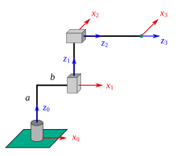
Fig. 70 Manipulador RPP#
Solución:
Calculando la cinemática directa, se tiene:
Dado que estamos trabajando con un manipulador RPP, la matriz jacobiana tendrá la forma:
Recuerde que tanto la segunda como tercera articulación son prismáticas, lo cual facilita en gran medida el cálculo de la matriz jacobiana. Identificando cada término implicado:
Efectuando el producto vectorial para calcular \( \vec{J}_{v_1} \):
Acomodando los términos como corresponde, formamos la matriz jacobiana:
Sustituyendo los valores numéricos, se tiene:
Luego, el vector de velocidades articulares podemos definirlo como:
Para calcular las velocidades del extremo, efectuamos el producto de J y \( \dot{ \vec{q} } \):
Por lo tanto:
La matriz jacobiana de un punto del manipulador}#
En la sección previa vimos cómo formar la matriz jacobiana del extremo del manipulador, sin embargo, en muchas ocasiones es necesario conocer las velocidades lineales y angulares en algún otro punto del manipulador, por ejemplo, cuando se analiza la dinámica del robot es necesario determinar las velocidades del centro de masa de cada eslabón. En esta sección veremos cómo formar la matriz jacobiana para una ubicación específica del manipulador.
Antes de comenzar con el análisis, lo primero que debemos comprender es que, en un manipulador serial, si accionamos la \(i-\)ésima articulación y mantenemos fijas todas las otras, entonces esta articulación producirá un movimiento sobre los eslabones \(i\), \(i+1\), \(\cdots\), \(n\). Por ejemplo, refiriéndonos al manipulador RRR de la Figura Fig. 71, si accionamos la junta número \((3)\) el único eslabón que se movería sería el \(3\), si accionamos la junta \((2)\) entonces afectaría tanto al eslabón \(2\) como al \(3\).
{kind=link}
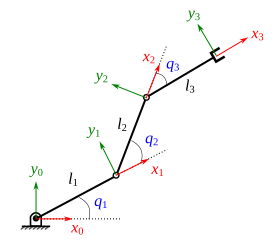
Fig. 71 Manipulador RRR#
Así pues, suponiendo que se tiene un punto \(A\) ubicado en el eslabón \(1\), entonces podríamos inferir que el accionamiento de las juntas \(2\) y \(3\) no le afecta, lo cual nos lleva a pensar que la matriz jacobiana asociada con este punto \(A\) debería contener ceros en las columnas \(2\) y \(3\) que corresponden a estas juntas, para que al efectuar la multiplicación por el vector de velocidades articulares se corresponda con una contribución nula de estas velocidades articulares a la velocidad lineal del punto \(A\).
Lo descrito previamente se puede generalizar para un punto ubicado en cualquier eslabón de un manipulador serial. Supongamos que se tiene un punto \(Q\) ubicado en el eslabón \(m\) de un manipulador serial, entonces la matriz jacobiana correspondiente al punto \(Q\) es una matriz de \(6\times n\):
Para cuando \(i \leq m \), las columnas de \(J_Q\) se determinan de la siguiente manera:
En el caso de que \(i > m\), entonces:
En las ecuaciones anteriores, \(\vec{r}_Q\) es un vector que describe la posición del punto \(Q\) en el sistema de referencia de la base.
Ejemplo. Calcule la matriz jacobiana de los puntos \(A\) y \(B\), ubicados en los eslabones 1 y 2, respectivamente, del manipulador RR mostrado en la Figura example_rr_robot_point_velocity_jacobian. Se sabe que:
Fig. 72 Manipulador RR#
Solución:
Matriz jacobiana del punto \(A\)
La matriz jacobiana del punto \(A\) está conformada de la siguiente manera:
Puesto que el punto \(A\) está ubicado en el eslabón \(1\) (\(m=1\)), entonces tanto \( \rbr{ \vec{J}_{v_2} }_A\) como \(\rbr{ \vec{J}_{\w{2}} }_A\) son cero, dado que en esta segunda columna (\(i=2\)) se cumple que \(i > m\). Calculamos ahora los términos de la primera columna, debido a que la junta \(1\) es una revoluta, entonces:
El vector \(\vec{r}_A\) podemos determinarlo si aplicamos una transformación a \(\vec{r}_A^1\) para describirlo en el sistema de la base:
Además, sabemos que \(\vec{z}_0 = \rowvec{0}{0}{1}^T\) y que \( \vec{r}_{o_0} = \rowvec{0}{0}{0}^T \). Sustituyendo y realizando las operaciones:
Entonces, la matriz \(J_A\) nos queda de la siguiente manera:
Matriz jacobiana del punto \(B\)
La matriz jacobiana del punto \(B\) está conformada de la siguiente manera:
Puesto que el punto \(B\) está ubicado en el eslabón \(2\) (\(m=2\)), para ambas columnas de \(J_B\) (\(i=1, i=2\)) se cumple que \(i \leq m\). Dado que tanto la junta \(1\) como la junta \(2\) son revoluta, entonces:
El vector \(\vec{r}_B\) lo calculamos aplicando la transformación correspondiente a \(\vec{r}_B^2\):
Tanto \(\vec{z}_1\) como \(\vec{r}_{o_1}\) se obtienen de la matriz \(T_1^0\):
Sustituyendo y realizando las operaciones:
Finalmente, organizando los términos, la matriz \(J_B\) nos queda de la siguiente forma:
El jacobiano analítico#
Singularidades#
Cinemática diferencial inversa#
Problemas#
Calcule la matriz jacobiana del manipulador RR mostrado en la Figura Fig. 73.
{kind=link}
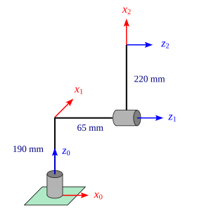
Fig. 73 Manipulador RR#
Para el manipulador RR mostrado en la Figura Fig. 73 calcule la velocidad lineal y angular del extremo para un instante en el que:
\(q_1 = 30°\) |
\(\dot{q}_1 = -0.75\) rad/s |
\(q_2 = 45°\) |
\(\dot{q}_2 = 1.65\) rad/s |
Para el manipulador RR de la Figura Fig. 73, se sabe que el centro de masa del eslabón \(2\) está ubicado de acuerdo con el siguiente vector de posición: \( \vec{r}_{G_2}^2 = [-110,0,0]^T \). Calcule la velocidad del centro de masa \( G_2 \) con respecto al sistema de referencia de la base, para un instante en el cual las posiciones y velocidades articulares son las que se listan enseguida.
\(q_1 = 90°\) |
\(\dot{q}_1 = 0.25\) rad/s |
\(q_2 = 60°\) |
\(\dot{q}_2 = 1.5\) rad/s |
En la figura Fig. 44 se muestra un manipulador RR. Para un instante en el que:
\(q_1 = 90°\) |
\(\dot{q}_1 = 0.5\) rad/s |
\(q_2 = 30°\) |
\(\dot{q}_2 = 1.5\) rad/s |
Realiza lo siguiente:
Determina la velocidad lineal del extremo del manipulador.
Calcula la velocidad angular de cada uno de los eslabones.
Calcula la matriz jacobiana del extremo del manipulador.
Calcula la velocidad de un punto \(A\) cuyas coordenadas en el sistema \(\{2\}\) están dadas por \(\vec{r}_A^2 = \rowvec{-100}{20}{0}^T\)
{kind=link}
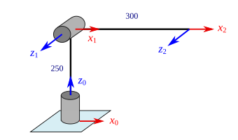
Fig. 74 Manipulador RR#
Calcule la matriz jacobiana para el manipulador RRR mostrado en la Figura rrr_planar_robot.
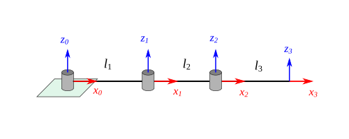
Fig. 75 Manipulador RRR#
Para el manipulador RRR mostrado en la Figura rrr_planar_robot calcule la velocidad lineal del extremo del manipulador para un instante en el que:
\(q_1 = 30°\) |
\(\dot{q}_1 = 1.5 \) rad/s |
\(q_2 = 90°\) |
\(\dot{q}_2 = 2 \) rad/s |
\(q_3 = 135°\) |
\(\dot{q}_3 = 1.25 \) rad/s |
Considere que las longitudes de los eslabones son \( l_1 = l_2 = 300 \) mm y \( l_3 = 200 \) mm.
En la Figura Fig. 76 se muestra un manipulador PPR, calcule la matriz jacobiana.
{kind=link}
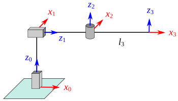
Fig. 76 Manipulador PPR#
En la Figura Fig. 77 se muestra un manipulador RRP. Para un instante en el que:
\( q_1 = 90° \) |
\( \dot{q}_1 = 0.25 \text{ rad/s} \) |
\( q_2 = 30° \) |
\( \dot{q}_2 = 1.75 \text{ rad/s} \) |
\( q_3 = 200 \text{ mm} \) |
\( \dot{q}_3 = 35 \text{ mm/s} \) |
Realiza lo siguiente:
Calcula la velocidad lineal del extremo del manipulador.
Calcula la velocidad angular de los eslabones 1, 2, y 3.
Se tiene un punto \(Q\) ubicado en el eslabón 2, su posición con respecto al sistema \(\{2\}\) está dada por: \( \vec{r}_Q^2 = [0,35,0]^T \) mm. Calcula \(\vec{v}_Q\).
Calcula la matriz jacobiana del extremo del manipulador.
{kind=link}
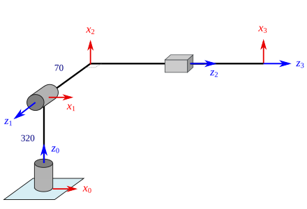
Fig. 77 Manipulador RRP#
Calcule la velocidad lineal y angular del extremo del robot ABB IRB 140, para un instante en el que:
\(q_1 = 0°\) |
\(\dot{q}_1 = 0.75\) rad/s |
\(q_2 = 0°\) |
\(\dot{q}_2 = 1.25\) rad/s |
\(q_3 = 0°\) |
\(\dot{q}_3 = 0.5\) rad/s |
\(q_4 = 0°\) |
\(\dot{q}_4 = 0\) rad/s |
\(q_5 = 0°\) |
\(\dot{q}_5 = 2\) rad/s |
\(q_6 = 0°\) |
\(\dot{q}_6 = 0.5\) rad/s |
Problemas para resolver utilizando la computadora#
Desarrolla una función denominada calcular_jacobiano, la cual deberá calcular la matriz jacobiana geométrica asociada con un manipulador serial. Los argumentos de entradas deberán ser tuplas que contengan los parámetros de Denavit-Hartenberg y el tipo de articulación, es decir: (\(a_i\), \(\alpha_i\), \(d_i\), \(\theta_i\), \(t_a\)), siendo \(t_a\) el tipo de articulación. Naturalmente, se deberán pasar tantas tuplas como grados de libertad tenga el manipulador. Utiliza SymPy para formar la matriz, de tal manera que los elementos puedan ser tanto variables simbólicas como valores numéricos.
Plantilla de función sugerida:
def calcular_jacobiano(*dh_params):
# realizar cálculos aquí
return J
Ejemplo de invocación a la función:
import sympy as sp
q1,q2 = sp.symbols('q_1,q_2')
calcular_jacobiano((100,0,0,q1,'r'), (150,0,0,q2,'r'))
Para el manipulador planar RRR de la Figura rrr_planar_robot se sabe que las posiciones articulares están dadas por:
Grafique las componentes de velocidad lineal (\(v_x, v_y, v_z\)) del extremo del manipulador en el intervalo \(0 \leq t \leq 5\). Considere que \( l_1 = l_2 = l_3 = 250 \) mm.